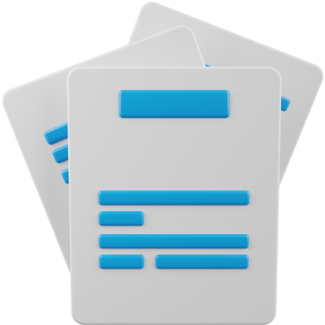
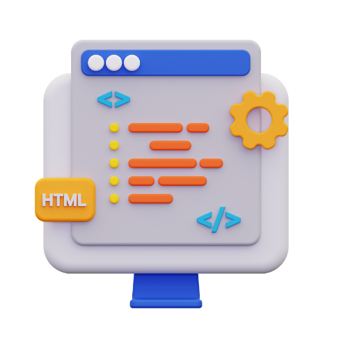

EQUIPE
Data: 15 de junho de 2023.
Relembre o NOSSO FOCO (explicado na Instruction 01).
IDEAÇÃO PARA INSTRUCTION 2
Foi evidenciada a necessidade de explorar a forma que a solução deve ser utilizada, em outras palavras, gostaríamos de responder a seguinte pergunta: o que devemos saber para que consigamos desenvolver o tipo de aplicação que mais se adequa ao nosso objetivo?
Diante dessa necessidade :
Consideramos que deveríamos optar por um tipo de aplicação possível (entre website, extensão, app mobile ou desktop, entre outros), e ao optar por uma alternativa, definir qual ferramenta do escopo da alternativa mais se adequa ao nosso objetivo, e quais conhecimentos são necessários para desenvolvimento da aplicação, um local o qual pode ser utilizado como ambiente para acoplarmos as funcionalidades que desenvolveremos em prol do objetivo (como por exemplo o questionário – ou similar – ao da Instruction 1 ).
DECISÃO DO GATE - 12/05/2023 - GO!
(Tutora: Luciana Berretta)
- Ajustes no cronograma.
IMPLEMENTAÇÃO PARA INSTRUCTION 2
Na implementação desta Instruction, decidimos um trajeto (cada tópico deveria ao menos ser visitado na busca de uma primeira exploração/primeiro contato):
Ao analisar as diferentes possibilidades (enquanto mantemos o processo ágil), decidimos construir uma aplicação web, e que para isso, a forma mais ágil seria a utilização de um CMS.
| Característica | Streamlit | Wordpress | Wix | Squarespace | Bubble.io |
|---|---|---|---|---|---|
| Facilidade de uso | Fácil | Fácil | Fácil | Fácil | Fácil |
| Flexibilidade | Alta | Alta | Moderada | Moderada | Alta |
| Personalização | Alta | Alta | Alta | Alta | Alta |
| Recursos | Limitados | Abundantes | Abundantes | Abundantes | Abundantes |
| SEO | Moderado | Excelente | Moderado | Excelente | Moderado |
| Comunidade | Pequena | Grande | Grande | Grande | Pequena |
| Hospedagem | N/A | N/A | Incluída | Incluída | N/A |
| Custo | Gratuito | Gratuito | Pago | Pago | Pago |
| Suporte | Comuidade | Comuidade | Suporte | Suporte | Suporte |
Percebemos que, diante de algumas análises, a ferramenta que mais nos atende é o WordPress.

Apesar da escolha do CMS, seria necessário também a escolha da ferramenta para prototipagem, assim como o SGBD. Felizmente, o WordPress tem como base o MySQL/MariaDB como SGBD, poupando escolhas.
O Figma foi utilizado para prototipagem.

XAMPP foi utilizado como simulador de servidor.

Portanto, desenvolvemos nosso conhecimento colocando em prática o trajeto dos tópicos acima, desenvolvendo um modelo inicial de cada tópico a fim de familiarizarmos com as ferramentas e necessidades de desenvolvimento.
Nosso trabalho resultou em:(1) Aprendizado documentado
No nosso Canal no YouTube
e no Drive (com dicas e observações que podem ajudar em projetos de escopo similar):
Documentação e vídeos:
|  |
|
(2) Buildzinho (ou buildzinhos rs) da Instruction 2:
Nossas primeiras “investidas” em:
|  |
DECISÃO DO GATE - 02/06/2023
GLORY!
Tutora: Luciana Berretta